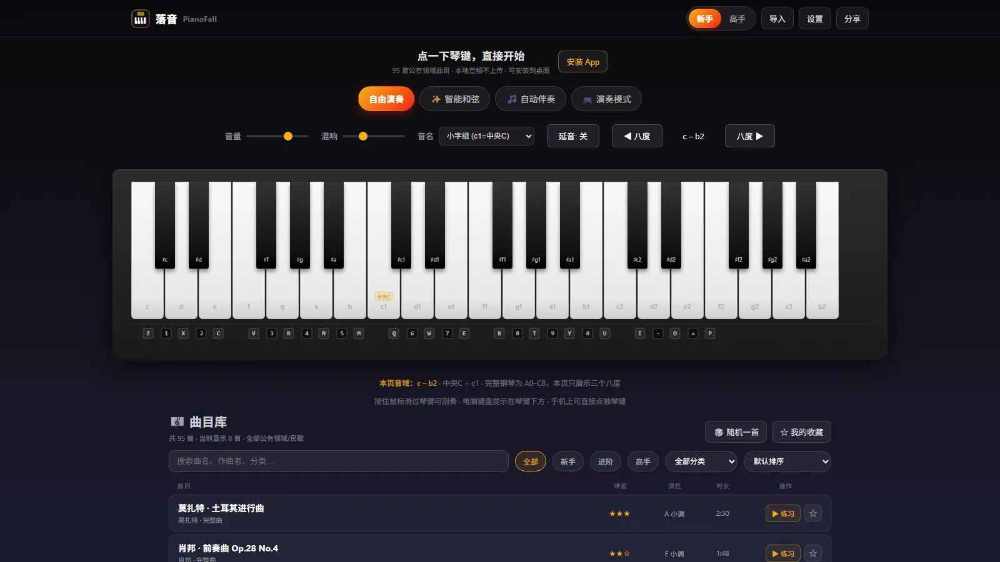
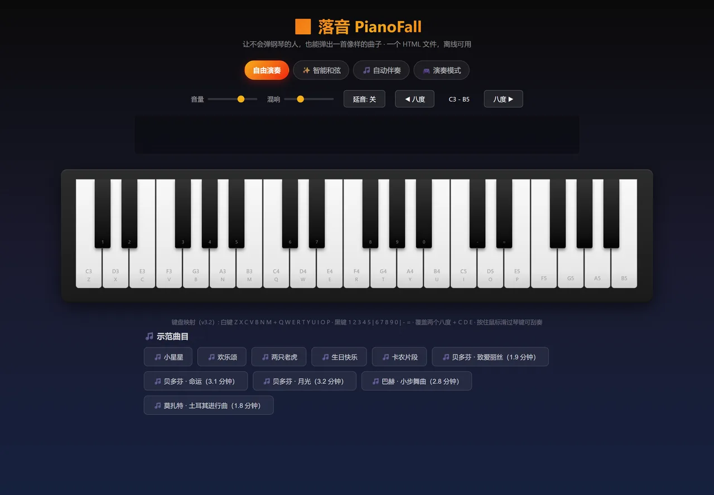
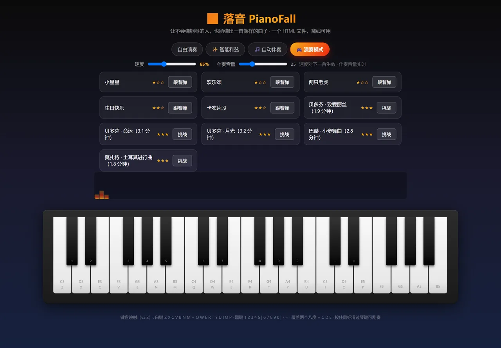
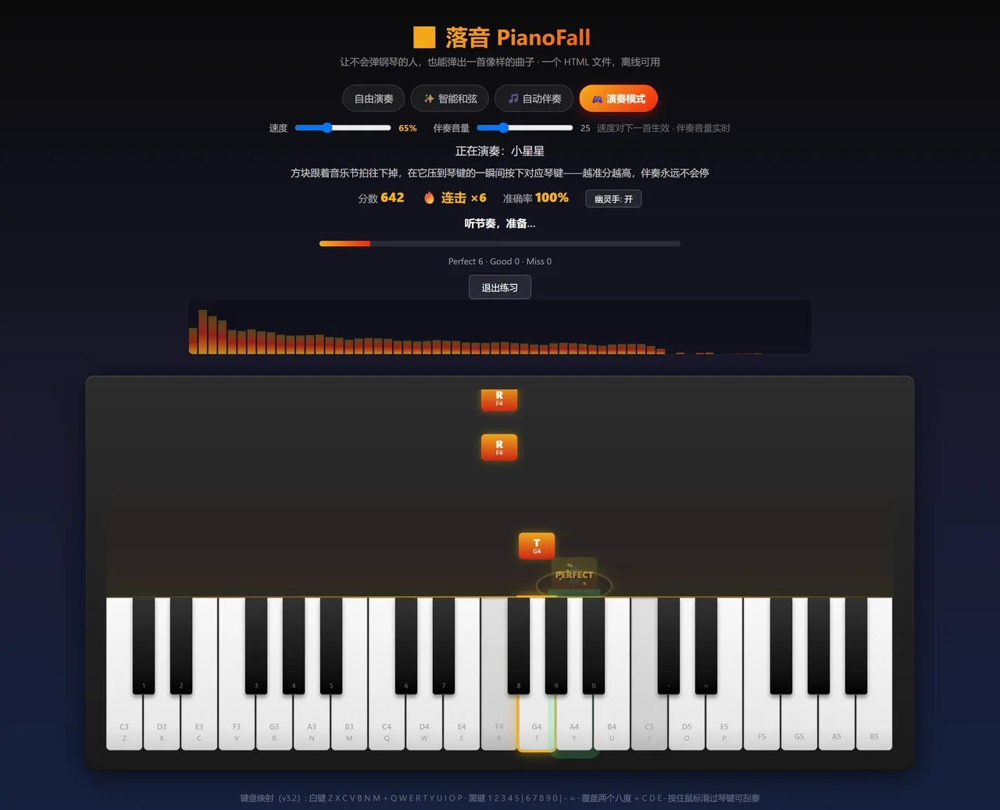
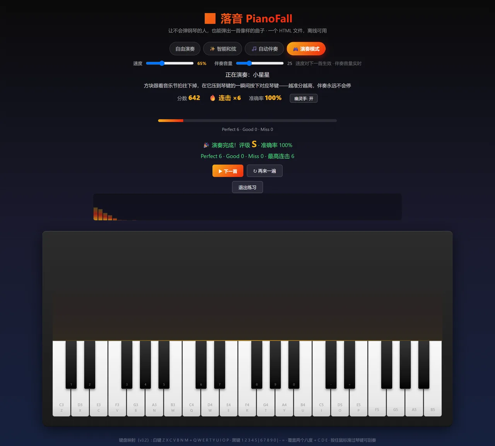

三个八度，点一下就响
鼠标、触摸、电脑键盘都能弹。支持多指和弦、刮奏和延音；手机横屏时白键按宽度铺满，不横向滚动。
PianoFall · 在线钢琴与智能练习
一个纯前端、零框架的在线钢琴。没有钢琴、没学过乐理，也可以打开浏览器，按下第一个键。
免费 · 无账号 · 手机/电脑 · 音频本地处理

Why / 为什么做
没有钢琴，不敢在宿舍练；看不懂五线谱，不知道从哪首开始；下载一个学琴 App，先注册、先付费、先买课。
我想验证一个更轻的入口：如果一个人今天只是想“摸一下琴”，能不能在 30 秒内真的听到自己弹出一段旋律？
落音就是从这个最小入口出发的。它不要求先学乐理，不要求先买设备，也不要求先注册账号。打开网页，琴键就在那里。
What / 它是什么
不是要替代钢琴老师，而是让第一次接触音乐这件事不再那么难。
鼠标、触摸、电脑键盘都能弹。支持多指和弦、刮奏和延音；手机横屏时白键按宽度铺满，不横向滚动。
新手慢速、宽判定、幽灵手补音、键盘提示；高手原速、严格判定。零基础也能先弹出一首完整的《小星星》。
儿歌、中国民歌、古典主题、圣诞颂歌、世界民谣，包含 5 首完整曲。支持搜索、难度筛选、收藏和随机一首。
下落方块、Perfect / Good / Miss、连击和评级；音频伴奏、MIDI 导入与智能扒谱都在浏览器本地完成，不上传。
Screens / 实际界面
以下截图来自项目汇报，均为真实运行画面。




Who / 给谁用
Real / 说明
落音目前处于公开体验阶段，没有接入登录、埋点和用户统计，所以没有可披露的累计用户量、月活和留存。能确认的是：95 首公有领域曲目、桌面/手机可用、PWA 安装、Android APK 离线、音频/MIDI 本地处理。
如果进入「高校好事计划」，我希望先带它去校园社团、师范生支教和社区音乐陪伴场景做小规模、可验证的使用，再谈更大的数字。